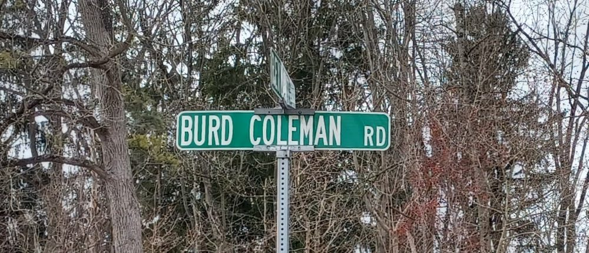
Invariably when publishing an historical article about the Coleman family of Cornwall, some astute reader will respond with the helpful comment “Hey! You misspelled BURD.” There are probably more important questions to be resolved, so in the interest of tackling “low-hanging fruit” let’s attempt putting this one to rest.
The correct response is: “It has been spelled both ways, and for good reason.” Read on…
The Coleman Family
All of this is moot if you have never heard the name “Coleman” in connection with local history.
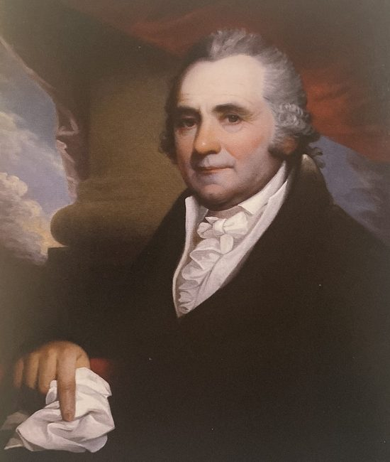
Robert Coleman, immigrant from Ireland in 1764, rose to fame, reputedly “one of America’s first millionaires” thanks to his shrewd business acumen in the early iron industry.
Over time his name became associated with the Cornwall ore banks, and many furnaces and forges in Elizabeth, Speedwell, Cornwall, Colebrook, Mt. Hope, Martic, Colemanville and others.
When he retired in 1809 he passed his holdings to the next generation, and the one after that, all of whom expanded the mine and operations. His grandsons Robert and George Dawson Coleman expanded into North Lebanon in the 1840s, for which we have “Coleman Memorial Park.”
His son, the probable poet Thomas Bird Coleman (1794-1836) and his offspring expanded the Cornwall Iron Furnace into other anthracite furnaces around Cornwall as early as 1840, then others including the Bird (or is it Burd?) Coleman furnaces in the 1870s.
Robert’s great-grandson Robert H. Coleman took the family name to great heights by 1890, and creating Mount Gretna, all before over-extending and suffering great disaster for himself and Lebanon.
The Coleman name then fades from Cornwall as his cousins William Freeman and Margaret Buckingham continue the family business.
Much has already been published in LebTown on these stories by this author and others. Hang in here for a few more details.
The Bird Connection
Though ironmasters competed, they also formed a professional alliance of sorts, possibly originating in their loyalty to the common cause of the Revolution. This author’s working theory is that Robert Coleman named his son Thomas Bird in honor of a contemporary, Mark Bird.
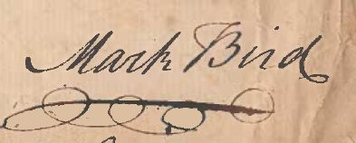
Mark Bird’s (1738-1812) successes as an iron master rivaled and certainly preceded those of Robert Coleman. Born in 1738 in Schuylkill County, he was son of William Bird (1706-1761) and a graduate of the University of Pennsylvania 1753.
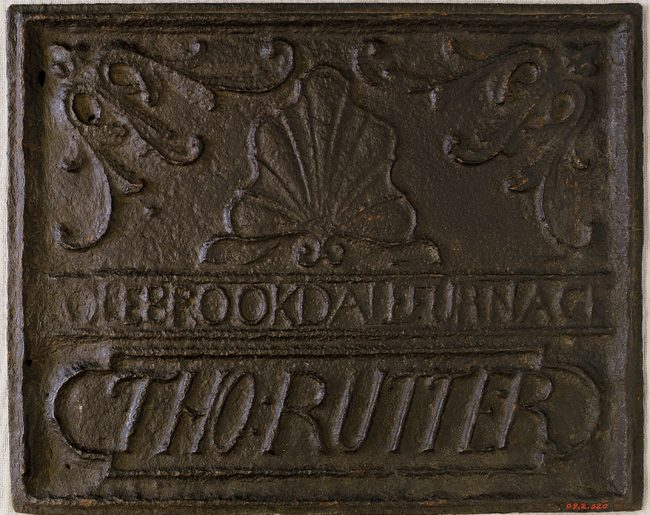
William Bird had learned from Quaker iron master Thomas Rutter, who was credited with building “Colebrookdale,” Pennsylvania’s first cold blast iron furnace in 1720. Bird founded the Birdsboro Iron Works in 1740 along the Schuylkill River in what is now Birdsboro, Pennsylvania (both named for him), about the same time Peter Grubb had established Cornwall furnace.
His son Mark was already an iron master when Coleman arrived in the country. When William died in 1761 Mark inherited those operations and went on to build Hopewell furnace in 1771. He owned the Birdsboro Iron works, slitting mill, Birdsboro steel furnace, grist mill, sawmill, and Hopewell iron mine.
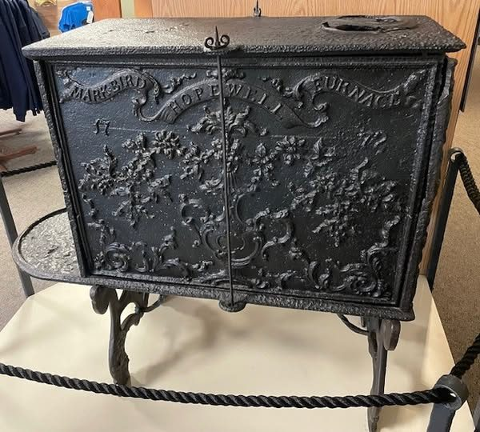
Like Cornwall, he produced munitions and chain for the Revolutionary war. After the war, a flood on Hay Creek ruined much of his works, and widespread postwar depression started his financial troubles. Some of what he was owed from the Continental Congress was never paid.
By 1781 his furnaces were out of operation, and he began borrowing money in various attempts to restore his business. In 1789 he left for North Carolina, known as one of the debtor colonies (the same year North Carolina ratified the Constitution and became a state). He made several attempts at starting iron businesses in Rutherford county, west of Charlotte, but with little success.
As a patriot Mark Bird had been considered one of the founding fathers of America (three of his brothers-in-law had signed the Declaration of Independence). But by 1805 he was destitute.
Bird’s Plea for Help
Mark Bird had already departed Pennsylvania about five years before Thomas Bird Coleman was born. Correspondence between Robert Coleman and Mark Bird gives evidence to the theory that Thomas’ given name of “Bird” was a gesture of friendship.
In weeks before departing for North Carolina in 1789 Mark Bird wrote a brief note requesting money from Coleman, having attempted to visit:
It is not proven, but likely that Coleman sent aid to his friend. Five years later Robert and Anne’s ninth and youngest son Thomas was born, his given name “Bird.”
Bird’s fortunes establishing iron works in North Carolina for the next decade were tumultuous. By 1803 his latest partnership was failing and within a few years his assets were being liquidated once again by a sheriff’s sale.
Richard Peter of Belmont, North Carolina, a mutual colleague of Bird and Coleman wrote a letter in 1807 calling attention to Bird’s plight, Bird perhaps too ashamed to appeal directly to Coleman another time.
Peter described Bird as poor, penniless, old, and a cripple on crutches. Though Peter had no great means of his own to help, he had organized some meager assistance. In writing to Coleman, he related Bird’s hope that among his former friends, “the Pride of wealth will not despise his poverty, which is a Chastisement for his having once prospered both wealth and pride.” Bird was well-aware how far he had fallen.
That Coleman had been a good friend of Bird is confirmed by “You know well all things relating to him.” Then Peter appealed that a “relief never so small will be acceptable. This you can best afford in your own way.”
He closes the letter by asking Coleman to relate the appeal to other iron masters, but could not resist appealing once more, and quite elegantly in a postscript:
Peter’s closing words became prophetic, not for Robert Coleman but his grandson Robert H. Coleman, whose “wealth and pride” would suffer devastating failure a century later.
Bird died in 1812 at his son’s home in North Carolina.
The Grubb and Burd Families
With so much emphasis on the name “Bird” among Coleman historians, one might suppose that “Burd” was simply a misspelling. But “Burd” was a more prominent name for a time than Coleman, beginning with the Grubb family, which preceded the Colemans.
On exploring the Grubb family tree, one encounters myriad names of Pennsylvania history. An extremely abbreviated version follows; perhaps stories for another time.
Peter Grubb (1702-1754) is credited with the discovery of ore that led to the mine and Cornwall Furnace in 1742. His estate passed to his sons Curtis (1733-1789, sometimes spelled Curttis) and Peter (1740-1786).
The brothers had a tumultuous relationship, partly because they inherited unequal shares; the younger Peter had 1/3 share to Curtis’s 2/3. An interesting aside, Peter had actually hired Robert Coleman, a teenager in 1766, as his clerk at the Hopewell forge for several years.
A decade later, both brothers were officers in the Continental army serving different battalions.
Col. James Burd (1726–1793)
James Burd (1726–1793) of Scotland, was a prominent colonial figure, a British officer who later became a Patriot during the American Revolution and served as a colonel in the Pennsylvania militia.
He and Curtis Grubb were close, both serving as commanders of battalions of the Continental Army.
Col. Burd had married Sarah Shippen, daughter of Edward Shippen II, the mayor of Lancaster and founder of Shippensburg. One of their daughters, Mary Shippen Burd became married to Peter Grubb (the son) in 1771. She gave birth to two sons, Alan Burd Grubb and Henry Bates Grubb, before her death at age 21 in 1774.
Two of Burd’s children provide further interest. James and Sarah’s first child, Sarah Burd, married Jasper Yeates II, who was a prominent lawyer, judge and politician, justice of Pennsylvania’s supreme court (as was his father). Citing one more connection in this tight circle, Yeates had studied under Shippen.
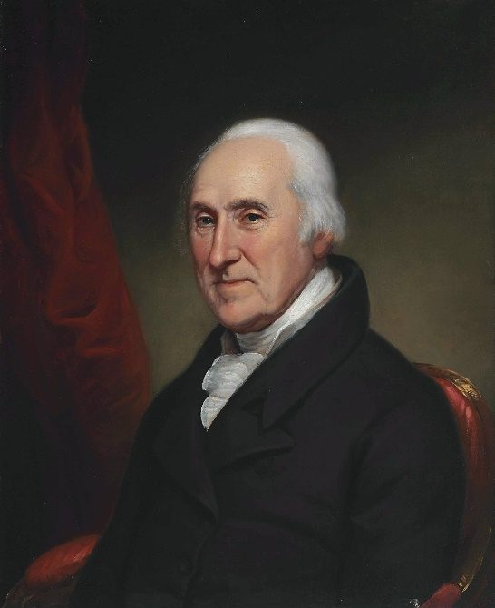
The other Burd offspring was Maj. Edward Burd (1749-1833) who served a lifetime as a lawyer.
Without elaborating further on family relationships, the point relevant to this story is the connection between Edward Burd and Robert Coleman.
Coleman had been conducting business with both brothers, Curtis and Peter Grubb. In 1786 Peter died of suicide, leaving his estate to two teenaged sons Alan Burd and Henry Bates Grubb.
Sharing concern that Curtis Grubb might take unfair advantage over his deceased brother’s estate, the two older brothers-in-law, “Uncle” Edward Burd and Jasper Yeates stepped in to protect the interests of the boys. To a lesser degree they were also worried about Robert Coleman possibly acting in cooperation with Curtis.
As it turned out, just several years later Curtis Grubb died, and then his son. When Grubb's executors auctioned his ironworks complex in January 1798, Robert Coleman purchased all of it for £37,200.
Coleman’s relationship remained amicable with Burd and Yeates. In 1791 Yeates recommended Coleman as a justice for the Court of Common Pleas. Edward Burd held a mortgage for Coleman decades later in 1817.
Burd 2.0
Robert Coleman passed in 1825 and Edward Burd died in 1833. The Bird Coleman furnaces were not built until forty years later by Coleman’s grandchildren. Edward had two daughters but no sons; would not the “Burd” name have faded from memory?
Although Edward’s legacy had faded, the Burd name remained in the Grubb family through those generations. The Grubb descendants continued to distinguish themselves in the iron industry just as much as the Colemans.
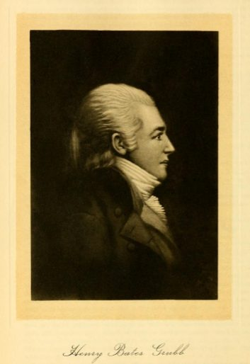
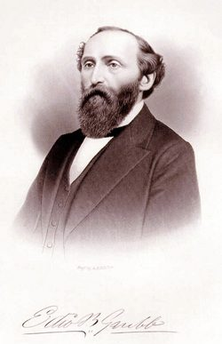
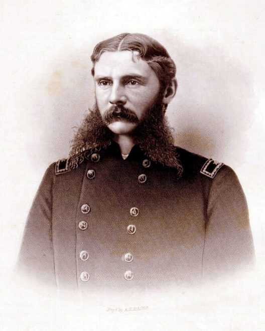
The older of the two Grubb boys, Alan Burd Grubb (1772-1823) became a doctor and moved to Tennessee. He served in the War of 1812 as a surgeon.
Henry Bates Grubb (1774-1823) continued the iron business as iron master at Mt. Hope and Hopewell Forge. He was a prominent member of St. James Episcopal Church of Lancaster.
Preserving the Burd legacy, his second son was Edward Burd Grubb, Sr. (1810-1867) was also an exemplary citizen here and abroad (his story should be told in a separate article) up through the Civil War.
His first son, Gen. Edward Burd Grubb (1841-1913) earned many distinctions in the Civil War, his first engagement at First Bull Run (1861), followed by many others. More on him below.
Bird Coleman Furnaces / Burd Coleman Village / Burd Coleman Road
It comes down to this: Two historic names connected to the Coleman family, and three remaining artifacts: a village, a road, a furnace complex. Why the difference in spelling? Was it simply preference? “What’s in a name?”
Let’s begin with the Bird Coleman furnaces. First built in 1872 and expanded over the decade, these were “modern” anthracite-fired, hot blast iron furnaces. The Coleman family had three decades of experience with this evolving technology, which led to taking the old Cornwall Iron Furnace out of blast on February 11, 1883 as it was no longer economically viable.
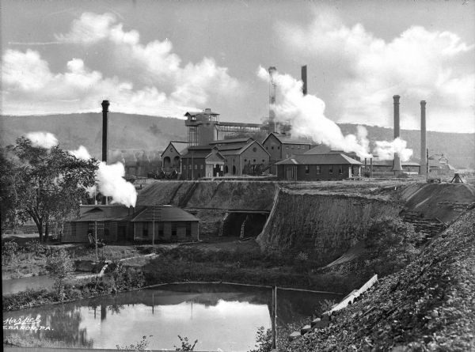
Thomas Bird Coleman had been credited as the one of Robert Coleman’s four sons who expanded Cornwall’s iron industry (brother George Dawson Coleman likewise for North Lebanon’s iron empire).
According to the book “Souls of Iron” by local historian James Polczynski, choosing a name for the furnace (designed by Artemas Wilhelm) was debated among family members:
The furnaces were built within eyesight of the Cornwall (now “Buckingham”) mansion and to the west of the ore pits. With them came the development of the village of workers’ houses and a road.
“Bird” It Is (Or Is It?)
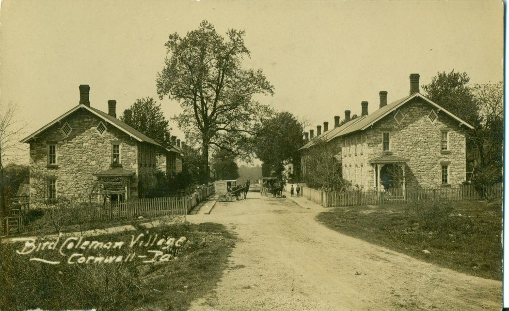
It seemed almost clear that the intended name of the furnaces, village and road is “Bird.” The book “The Communities of Cornwall Across Time” by Mike Trump and Susan Wentzel states without apology, “Burd Coleman Village … was named after Thomas Bird Coleman.”
Variable spellings of names were widespread in earlier times. In 1873 as Artemas Wilhelm was bringing the first furnace on line, depressed economic conditions were discouraging his efforts. Sue Ellen Coleman wrote to young Robert H. Coleman at boarding school mentioning “Byrd Coleman furnace,” and her sympathy for Mr. Wilhelm’s troubles.
The Grittinger Effect
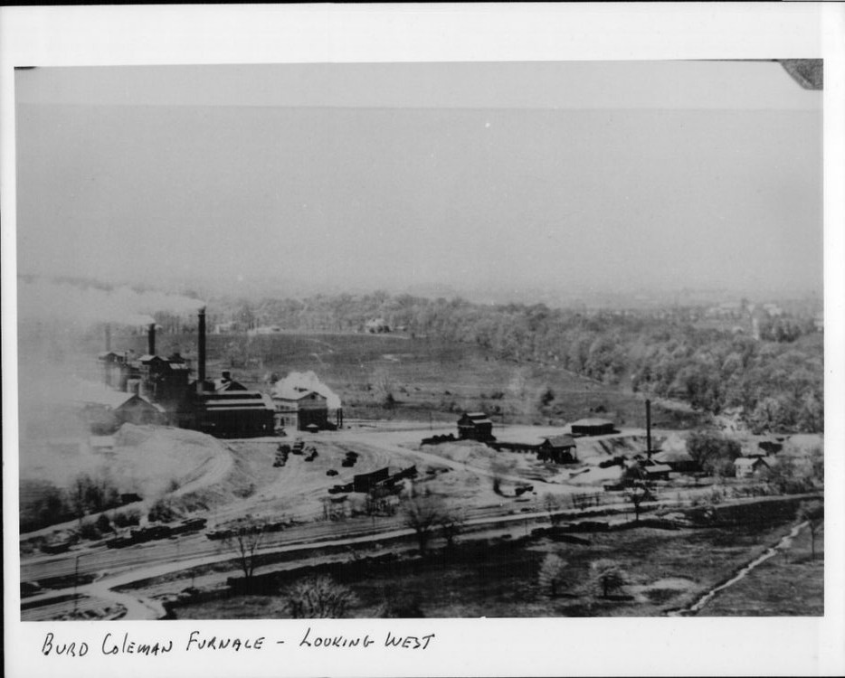
Adding to the confusion was Henry Grittinger, manager of Coleman furnaces and historian. He preferred calling it (correctly) the Bird Coleman Furnace.
But he could also alternately refer to the man “Thomas Burd Coleman” and other times “Thomas Bird Coleman,” out of carelessness, an easily-forgiven error.
Grittinger had in mind the names “Burd” and “Grubb” in his histories. Mentioned above, General E. Burd Grubb (1841-1913), a Union officer who participated in establishing the Lebanon Valley Furnace with the Meilys, was still actively engaged in iron business with his brother at the time of Grittinger’s writing. The “Burd” name remained present in the collective consciousness, while that of “Bird” was fading.
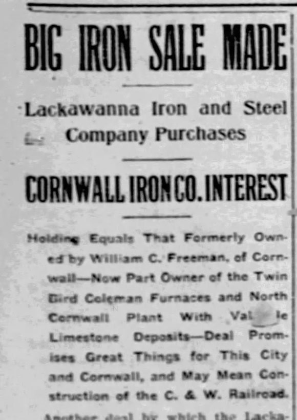
Gen. Grubb’s brother C. Ross Grubb served as president of the Cornwall Ore Banks at the turn of the 20th century when Grittinger was writing his histories. The Grubb family, with their Burd connection, retained a one-sixth interest in the mines in those final years before Bethlehem Steel.
The Bethlehem Steel Effect
In 1901 the furnaces were still known as “Bird Coleman” when Wm. C. Freeman sold them to the Lackawanna Steel Company.
But then a shift occurs. It could simply be alternative spellings confused by those writing for the Lebanon Daily News, but in 1916 headlines declared that Charles M. Schwab, head of Bethlehem Steel, “is now in control of all of Lebanon’s biggest iron and steel industries,” including “the twin Burd Coleman furnaces.”
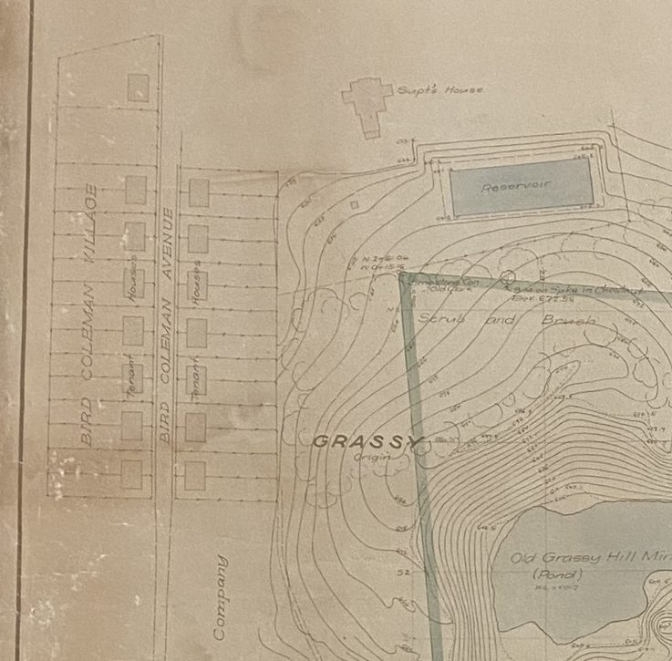
By 1945, several decades into the reign of Bethlehem Steel, maps record the spelling of the village and road as “Burd Coleman.”
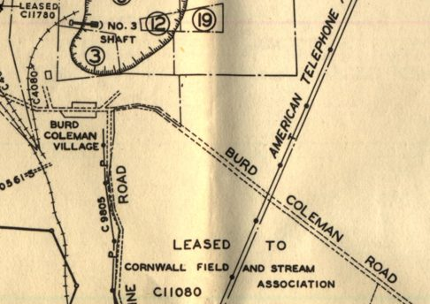
Though research of early Borough records is on-going, when the Borough of Cornwall was established in 1926 the usage of “Burd” had taken root.
Closing
In a recent lecture given to the Friends of the Cornwall Iron Furnace, historian James Polczynski made a point of emphasizing Robert Coleman’s magnanimous personality, a man of great integrity and decency. It is not doubted that he reached out to help his friend Mark Bird. Nor was there any long-standing animus with Edward Burd, simply profound respect. Coleman and Burd were upstanding citizens, known to one another for decades, engaged in politics and law.
As far as the naming of the village and road is concerned, there is little intention that the “Burd” name was to be honored. The greater likelihood is that it crept in accidentally, then formalized by the massive presence of Bethlehem Steel.
When Cornwall Borough was established in 1926 (thus celebrating its centennial next year), the “Bird” Coleman furnaces were already gone, having been demolished in April 1921. That left only the road and the village; sufficient precedent and momentum led to formalizing the name “Burd.”
Even if unintentional – the name “Burd” deserves honor.
Originally published on LebTown, April 2, 2025.